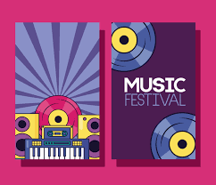

A music festival is a community event with performances of singing and instrument playing that is often presented with a theme such as musical genre (e.g., rock, blues, folk, jazz, classical music), nationality, locality of musicians, or holiday. Music festivals are generally organized by individuals or organizations within networks of music production, typically music scenes, the music industries, or institutions of music education. The music festival is the largest and one of the most important performance institutions in music life, a place for experiencing where the culture is at.
Music festivals are commonly held outdoors, with tents or roofed temporary stages for the performers. Often music festivals host other attractions such as food and merchandise vending, dance, crafts, performance art, and social or cultural activities. Many festivals are annual, or repeat at some other interval, while some are held only once. Some festivals are organized as for-profit concerts and others are benefits for a specific charitable cause.[2] At music festivals associated with charitable causes, there may be information about social or political issues.
There are many music festivals, some of which include many different genres, but some festivals specialize in one specific genre, such as EDM, metal, hip hop, among others. There are also other types of festivals, such as jazz. An example of a jazz festival is the New Orleans Jazz and Heritage Festival. While contemporary festivals are often represented as flourishing grounds for extraordinary experiences,[9] they increasingly serve as a way to create cultural identity, lifestyle, community, belonging and self-actualisation.[10] Furthermore, festivals are a manifestation for creating escapism[11] and a seasonal cultural economy to experience ritually and collectively.[12]